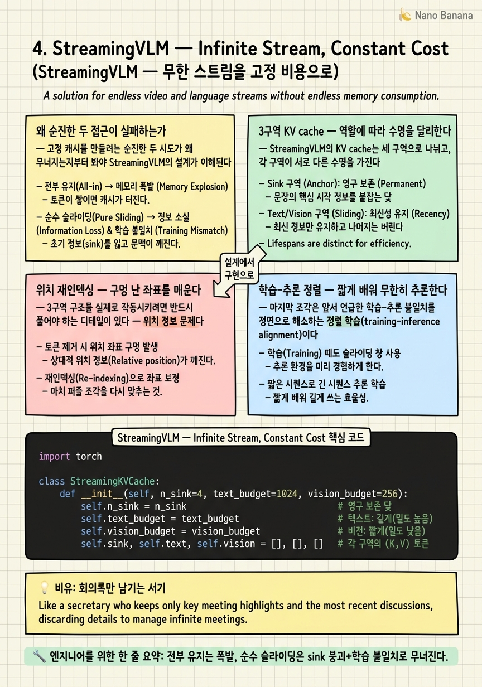

StreamingVLM — Infinite Stream, Constant Cost

🎯 학습 목표
- 순진한 full-cache와 슬라이딩 윈도우가 각각 왜 실패하는지 설명한다
- sink·텍스트·비전 3구역 캐시의 역할 분담을 안다
- 중간 토큰 방출 후 RoPE 위치 재인덱싱이 필요한 이유를 이해한다
- 학습-추론 정렬이 짧은 학습으로 무한 추론을 가능케 하는 원리를 안다
- 텍스트 윈도우가 과거 영상의 압축 기억 역할을 겸하는 구조를 설명한다
이제 Stage ② 기억 관리로 넘어간다. 이 단계의 다섯 논문은 전부 하나의 질문에 답한다 — KV cache를 시간과 무관한 고정 크기로 어떻게 유지하는가. 그 계보의 출발점이 StreamingVLM(MIT Han Lab, arXiv 2510.09608)이다.
1장에서 배운 attention sink를 기억하는가? StreamingLLM이 텍스트에서 "sink + 최근 윈도우"로 무한 스트림을 처리했다면, StreamingVLM은 이것을 비디오로 확장한다. 하지만 단순 확장이 아니다. 핵심은 "왜 슬라이딩 윈도우를 그냥 쓰면 망하는가"에 대한 정교한 답에 있다.
비디오에는 텍스트에 없는 특수성이 있다 — 비전 토큰은 양이 많고 정보 밀도가 낮은 반면, 모델이 생성한 텍스트(캡션·답변)는 양이 적고 밀도가 높다. StreamingVLM은 이 비대칭을 이용해 비전 토큰은 짧게 유지하고 텍스트는 길게 유지한다. 그 결과 과거 영상의 원본 픽셀은 버리되 그 내용을 서술한 텍스트가 압축된 장기 기억으로 남는다. 이 챕터는 그 3구역 구조와, 그것을 실제로 작동시키는 두 디테일(위치 재인덱싱, 학습-추론 정렬)을 해부한다.
핵심 내용
왜 순진한 두 접근이 실패하는가
고정 캐시를 만들려는 순진한 두 시도가 왜 무너지는지부터 봐야 StreamingVLM의 설계가 이해된다.
접근 A — 전부 유지. KV cache가 선형으로 커지고 attention은 사실상 제곱 비용이 된다(1장에서 계산했다). 몇 분 만에 메모리와 지연이 폭발한다. 무한 스트림에는 애초에 불가능한 선택지다.
접근 B — 최근 N개만 유지(순수 슬라이딩 윈도우). 여기엔 두 가지 함정이 있다.
첫째, 앞서 배운 attention sink를 버리면 모델이 붕괴한다. 최근 N개만 남기면 맨 앞 sink 토큰이 사라져 attention 분포가 무너진다.
둘째, 더 미묘한 학습-추론 불일치(train-test mismatch)다. 모델은 학습 때 "처음부터 끝까지 다 보이는" 풀 attention으로 배웠는데, 추론에서 갑자기 중간이 뻥 뚫린 캐시를 주면 이는 학습 중 본 적 없는 분포다. 모델은 처음 보는 입력 형태에 성능이 무너진다.
즉 고정 캐시는 "무엇을 남길지"만의 문제가 아니라 "모델이 그 남긴 형태를 학습 때도 봤는가"의 문제이기도 하다. StreamingVLM은 이 둘을 각각 3구역 구조와 정렬 학습으로 푼다.
3구역 KV cache — 역할에 따라 수명을 달리한다
StreamingVLM의 KV cache는 세 구역으로 나뉘고, 각 구역이 서로 다른 수명을 가진다.
-
Sink 토큰 — 맨 앞 몇 개, 영구 보존. attention 붕괴를 막는 닻(anchor) 역할. 절대 방출하지 않는다.
-
텍스트 윈도우(길게) — 지금까지 모델이 생성한 답변·캡션 토큰들. 텍스트는 토큰당 정보 밀도가 높아 사실상 과거 영상의 "요약본" 역할을 하므로 오래 유지한다.
-
비전 윈도우(짧게) — 최근 프레임의 비주얼 토큰만. 양이 많고 밀도가 낮으므로 오래된 것부터 빨리 방출한다.
이 구조의 직관이 핵심이다. 과거 영상의 원본 픽셀 토큰은 버리되, 그 내용을 서술한 텍스트가 압축된 기억으로 남는다.
사람이 영화를 볼 때와 똑같다. 두 시간 전 장면의 픽셀을 정확히 기억하진 못해도, "아까 주인공이 총을 챙겼지"라는 언어적 기억은 또렷이 남는다. 비전은 순간의 지각이고 텍스트는 지속되는 기억이다. StreamingVLM은 이 인간 기억의 비대칭을 KV cache 설계에 그대로 옮겼다.
덕분에 캐시 크기가 상수로 고정되어, 시간이 아무리 지나도 프레임당 처리 비용이 일정하다. 결과는 강력하다 — H100 한 장에서 8 FPS로 사실상 무한 스트림을 처리하고, 자체 장기 스트리밍 벤치마크에서 GPT-4o mini 대비 66% 승률을 낸다.
위치 재인덱싱 — 구멍 난 좌표를 메운다
3구역 구조를 실제로 작동시키려면 반드시 풀어야 하는 디테일이 있다 — 위치 정보 문제다.
요즘 LLM은 RoPE(Rotary Position Embedding)로 각 토큰에 위치 정보를 심는다. 그런데 중간의 비전 토큰을 방출하면 위치 번호에 구멍이 생긴다. 예를 들어 남은 토큰의 위치가 \(0, 1, 2, \dots, 5000, 90000, 90001, \dots\) 처럼 뛴다.
모델은 이런 거대한 간격(gap)을 학습한 적이 없다. RoPE는 상대 위치에 민감하게 설계되어 있어, 5000에서 90000으로 점프하는 상대 거리는 모델에게 "듣도 보도 못한 먼 거리"로 해석되어 혼란을 일으킨다.
해법은 방출 후 남은 토큰들의 위치를 연속되게 다시 매기는 것이다.
\[\text{방출 전: } [0,1,\dots,5000,\ 90000,90001,\dots] \;\longrightarrow\; \text{재인덱싱 후: } [0,1,2,3,\dots]\]
이렇게 하면 모델 입장에서는 "구멍 없는 짧은 시퀀스"처럼 보인다. 실제로는 1시간 전 정보와 방금 전 정보가 섞여 있지만, 위치 좌표상으로는 매끄럽게 이어진 짧은 문맥이 된다. 이 재인덱싱이 없으면 3구역 캐시는 이론적으로만 예쁘고 실전에서는 붕괴한다 — 논문의 숨은 일꾼이다.
학습-추론 정렬 — 짧게 배워 무한히 추론한다
마지막 조각은 앞서 언급한 학습-추론 불일치를 정면으로 해소하는 정렬 학습(training-inference alignment)이다.
추론 때 캐시가 [sink + 텍스트 + 최근 비전]이라는 특정 모양을 가진다면, 학습도 그 모양과 비슷해지도록 맞춰준다. 구체적으로는 긴 영상 전체를 한 번에 학습하는 대신, 짧은 구간을 겹쳐가며(overlapped) 학습해 추론 시의 캐시 분포를 학습 중에 미리 경험시킨다.
이 정렬의 실용적 이득이 크다. 무한 스트림을 추론하기 위해 무한 길이 영상으로 학습할 필요가 없다. 짧은 시퀀스 학습만으로 무한 스트림 추론이 가능하다. 학습 비용까지 절감되는 것이다 — Stage ②의 다른 기법들이 대부분 추론 시 비용만 다루는 것과 대조된다.
정리하면 StreamingVLM은 세 가지를 결합해 완성된다.
| 구성요소 | 해결하는 문제 |
|---|---|
| 3구역 고정 캐시 | 캐시 크기를 상수로 (메모리 폭발) |
| 위치 재인덱싱 | RoPE 좌표 구멍 (위치 혼란) |
| 학습-추론 정렬 | 분포 불일치 (성능 붕괴) |
한계도 분명하다. 장기 기억이 텍스트 서술에 의존하므로, 모델이 말로 남기지 않은 과거 시각 정보는 소실된다. "1시간 전 그 장면을 다시 자세히 봐" 같은 질의에는 취약하다. 이 빈틈을 다음 장 ReKV(버리지 않고 오프로드+검색)가 보완재로 메운다. StreamingVLM과 ReKV는 "버리되 요약을 남긴다" vs "안 버리고 창고에 넣는다"라는 정반대 철학의 짝이다.
💡 비유로 이해하기
온종일 이어지는 마라톤 회의가 있다. 속기사가 모든 발언의 음성 파일을 통째로 보관하려 들면(full cache), 저장고가 몇 시간 만에 터진다. 그렇다고 최근 10분 음성만 남기면(순수 슬라이딩 윈도우), 회의 초반에 정한 대전제를 잊어 논의가 산으로 간다.
유능한 서기는 다르게 한다. 회의 안건표 첫 장(sink)은 늘 펼쳐두고, 지나간 논의는 원본 음성을 버리는 대신 핵심을 요약한 회의록 텍스트(텍스트 윈도우)로 길게 남기며, 방금 나온 발언의 생생한 음성(비전 윈도우)만 잠깐 손에 쥔다. 두 시간 전 발언의 억양은 잊어도 "그때 예산 삭감에 합의했다"는 문장은 회의록에 또렷이 남는다.
여기에 두 가지 요령이 더 있다. 회의록 페이지를 버릴 때마다 쪽 번호를 1,2,3…으로 다시 매겨(위치 재인덱싱) 나중에 참조가 꼬이지 않게 하고, 신입 서기를 훈련할 때 실제 회의와 똑같은 '요약본+최근 발언' 형태로 연습시켜(학습-추론 정렬) 첫날부터 무한정 긴 회의도 감당하게 만든다. 단, 회의록에 안 적힌 사소한 장면은 영원히 사라진다 — 그게 이 방식의 한계다.
💻 코드 예시
3구역 고정 캐시와 위치 재인덱싱을 개념 구현으로 보자. 새 프레임 KV가 들어올 때 비전 윈도우만 넘치면 방출하고, 남은 토큰의 위치를 연속으로 다시 매긴다.
import torch
class StreamingKVCache:
def __init__(self, n_sink=4, text_budget=1024, vision_budget=256):
self.n_sink = n_sink # 영구 보존 닻
self.text_budget = text_budget # 텍스트: 길게(밀도 높음)
self.vision_budget = vision_budget # 비전: 짧게(밀도 낮음)
self.sink, self.text, self.vision = [], [], [] # 각 구역의 (K,V) 토큰
def add(self, kv, kind):
"""kv: 한 토큰의 (key, value). kind: 'sink'|'text'|'vision'."""
if kind == "sink" and len(self.sink) < self.n_sink:
self.sink.append(kv)
elif kind == "text":
self.text.append(kv)
if len(self.text) > self.text_budget:
self.text.pop(0) # 오래된 텍스트 방출 (천천히)
else: # vision
self.vision.append(kv)
if len(self.vision) > self.vision_budget:
self.vision.pop(0) # 오래된 비전 방출 (빠르게)
def assemble(self):
"""추론용 캐시를 조립하고 RoPE 위치를 연속으로 재인덱싱."""
ordered = self.sink + self.text + self.vision # 3구역 순서 결합
keys = torch.stack([k for k, v in ordered])
vals = torch.stack([v for k, v in ordered])
# 방출로 생긴 위치 구멍을 무시하고 0..N-1로 새 좌표 부여
new_positions = torch.arange(len(ordered))
keys = apply_rope(keys, new_positions) # 구멍 없는 짧은 시퀀스처럼
return keys, vals
# 캐시 크기는 항상 n_sink + text_budget + vision_budget 이하로 '상수' 고정
세 리스트 sink/text/vision이 서로 다른 예산(budget)을 갖는 게 핵심이다 — vision_budget(256)이 text_budget(1024)보다 훨씬 작아, 정보 밀도가 낮은 비전 토큰이 먼저 빠르게 방출된다. sink는 예산 초과 로직이 없어 영구 보존된다. assemble의 new_positions = torch.arange(len(ordered))가 위치 재인덱싱이다 — 실제로 방출된 토큰 때문에 원래 좌표엔 구멍이 났지만, 남은 토큰에 0부터 연속 번호를 다시 매겨 모델에게는 매끄러운 짧은 시퀀스로 보이게 한다. 전체 캐시 크기가 세 예산의 합으로 상한이 잡혀 있어, 스트림이 몇 시간을 흘러도 메모리가 상수로 유지된다.
🏭 현업에서의 평가
✅ 시니어가 보는 것
- attention sink 보존과 위치 재인덱싱을 고정 캐시의 필수 요소로 인지하는가
- 비전/텍스트의 정보 밀도 차이를 캐시 예산 배분으로 연결하는가
- 학습-추론 분포 정렬이 성능 유지에 왜 필수인지 설명하는가
⚠️ 레드 플래그
- 슬라이딩 윈도우를 그냥 적용하고 sink 붕괴·위치 구멍을 간과함
- 고정 캐시를 추론만의 문제로 보고 학습 정렬의 필요성을 놓침
- "텍스트 요약으로 다 커버된다"며 말 안 한 시각 정보 소실 한계를 무시함
🎤 예상 인터뷰 질문
- 슬라이딩 윈도우로 고정 캐시를 만들었더니 출력이 무너졌다. 두 가지 원인과 각 수정은?
- 비전 토큰과 텍스트 토큰에 서로 다른 캐시 예산을 주는 근거는 무엇인가?
- StreamingVLM만으로 '1시간 전 장면 다시 보기' 질의가 왜 어려운가? 어떻게 보완하겠는가?
✨ 핵심 요약
두 순진한 실패
전부 유지는 폭발, 순수 슬라이딩은 sink 붕괴+학습 불일치로 무너진다.
3구역 캐시
sink(영구)·텍스트(길게)·비전(짧게)로 수명을 차등해 크기를 상수로 고정한다.
텍스트=압축 기억
픽셀은 버리되 그 내용을 서술한 텍스트가 과거의 요약 기억으로 남는다.
위치 재인덱싱
방출로 생긴 RoPE 좌표 구멍을 연속 재부여해 구멍 없는 짧은 시퀀스로 위장한다.
학습-추론 정렬
추론 캐시 모양으로 짧게 학습해 무한 스트림 추론과 학습비 절감을 동시에 얻는다.
상수 비용
H100 한 장 8 FPS로 무한 스트림, GPT-4o mini 대비 66% 승률.
텍스트 의존 한계
말로 안 남긴 과거 시각 정보는 소실 — ReKV 계열이 보완재.